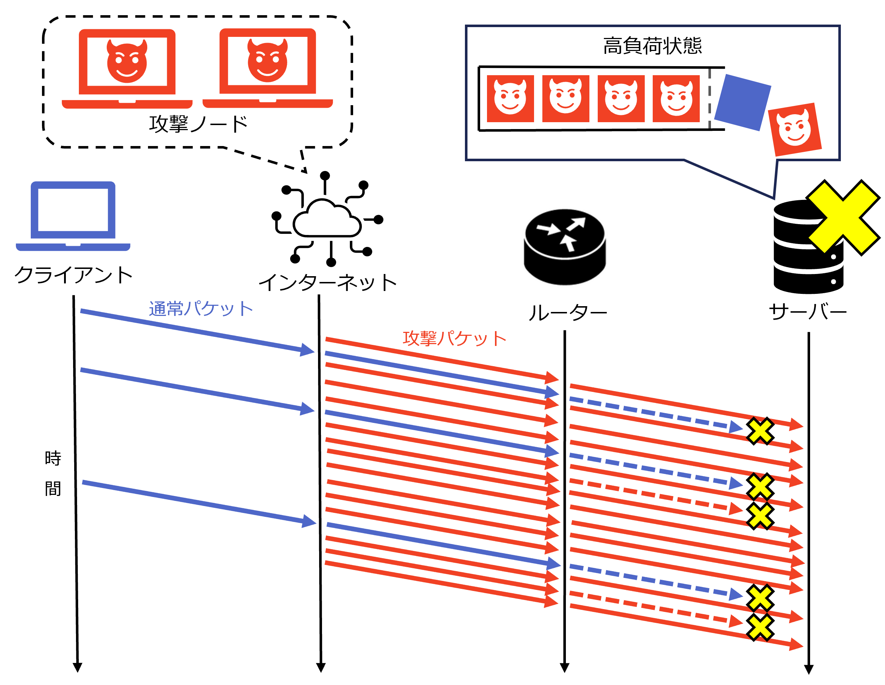
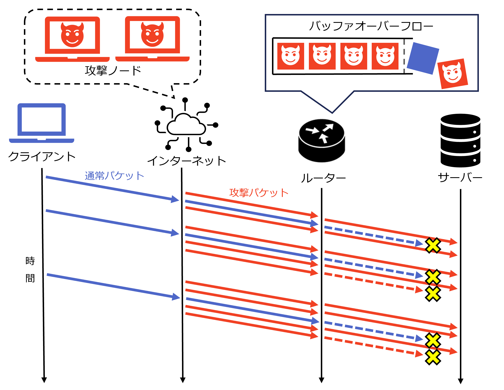
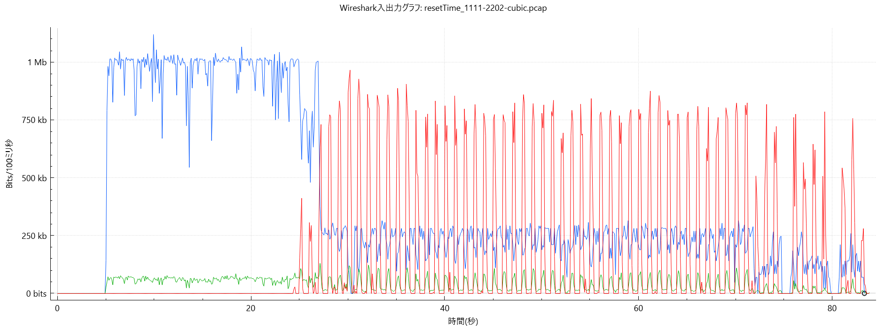

卒業研究紹介
研究テーマ
LDDoS攻撃下におけるTCP/QUICの輻輳制御特性の分析および改良手法の提案
概要
LDDoS攻撃は、短時間のバースト通信を周期的に送ることで、目立ちにくい一方で通信品質を大きく落とす攻撃です。
本研究では事前検証として、TCP と QUIC がこの攻撃を受けたときにどう影響するかを、複数の輻輳制御アルゴリズムごとに比較・分析しました。その結果、TCP か QUIC かという違い以上に、どの輻輳制御アルゴリズムを使うかが性能に大きく影響することを示しました。さらにその知見をもとに、攻撃下でも比較的耐性が高かった BBR に着目し、通信を安定化させる改良を提案・評価しました。
DDoS

LDDoS

取り組んだこと
- TCP と QUIC の両方を対象に、NewReno / CUBIC / BBR という代表的な輻輳制御アルゴリズムを比較
- ns-3 や quiche ベースのエミュレーション環境を用いて、LDDoS 攻撃時の通信性能を評価
- 平均スループットだけでなく、時系列での挙動の変化も分析し、性能差の要因を考察
- 分析結果をもとに、BBR の帯域推定に中央値を使った補正を加える改善を設計・評価
提案手法のポイント
- 既存の BBR は耐性が高い一方、攻撃による一時的な観測値の乱れに影響を受ける場面がある。
- 提案手法では、直近の帯域幅推定値の中央値で補正し、攻撃パルスによる急な変動を受けにくくした。
- これにより、攻撃下でも送信レートを過度に落とさず、より安定して性能を維持できるようにした。
- 単に強気な制御にするのではなく、他の通信との公平性を崩さないよう設計・検証した。
結果
TCP と QUIC の差そのものは大きくない一方、輻輳制御アルゴリズムの違いで性能差が大きく生じることが分かった。NewReno / CUBIC（パケットロスベース）は攻撃下で大きく性能低下し、BBR（転送遅延ベース）は比較的高い耐性を示した。
提案手法では、既存 BBR と比べて約 40% のスループット向上を確認しつつ、公平性も維持できた。

スループット推移（一例）

各条件における平均スループット
この研究で発揮した力
- 分析力：複数のプロトコル・アルゴリズムの結果と仕様を比較し、性能差の主要因を整理
- 課題発見力：攻撃化の通信性能改善に最も効くのが輻輳制御アルゴリズムであることを明確化
- 提案力：分析から BBR 改良手法を考案し、性能向上を実現した
- 計画・実行力：4 月に着手し、8 月までに比較分析、11 月までに提案手法の検証まで到達
- 実験設計力：実環境に即した評価指標・ネットワーク条件で、リアルな検証を設計した
- 技術理解力：ネットワーク、輻輳制御、QUIC/TCP、シミュレーション環境を横断して扱った
使用技術・キーワード
- ns-3
- quiche
- quic-network-simulator
- Docker
- トランスポートプロトコル
- TCP
- QUIC
- 輻輳制御
- NewReno
- CUBIC
- BBR
- セキュリティ